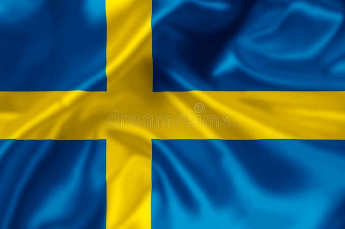

Suecia es una nación escandinava con miles de islas costeras y lagos interiores, junto con extensos bosques boreales y montañas nevadas. Sus principales ciudades, la capital oriental Estocolmo, Malmö y Gotemburgo en el suroeste, son costeras. La ciudad de Estocolmo está construida sobre 14 islas. Tiene más de 50 puentes, además de una ciudad antigua medieval, Gamla Stan, palacios reales y museos, como el Skansen al aire libre.

CARACTERISTICAS
Capital: Estocolmo, una ciudad conocida por su belleza y arquitectura.
Idioma: Sueco, aunque muchos hablan inglés con fluidez.
Moneda: Corona sueca (SEK).
Gobierno: Monarquía constitucional con un parlamento democrático.
Economía: Alta tecnología, industria automotriz (como Volvo y Scania) y bienestar social.
Clima: Frío y variado, con inviernos largos y veranos cortos, especialmente en el norte.
Educación: Sistema educativo de alta calidad y gratuito, conocido por fomentar la igualdad de oportunidades.
Calidad de vida: Alto nivel de bienestar, con énfasis en la sostenibilidad y el cuidado del medio ambiente.
Cultura: Famosa por su música (como ABBA y Avicii) y su diseño minimalista.
Naturaleza: Rica en bosques, lagos y montañas, ideal para actividades al aire libre como el senderismo y el esquí.